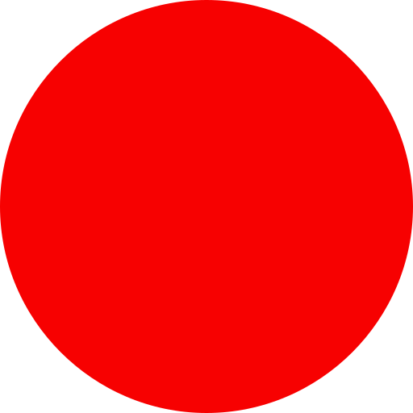
puka - rojo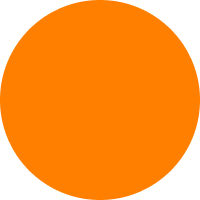
chiwanway - anaranjado
tunquśh - amarillo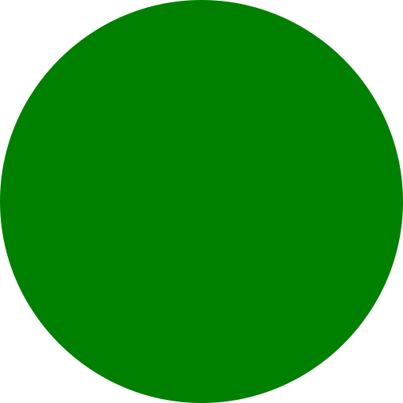
quyu - verde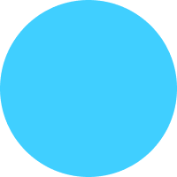
qamya anqas - celeste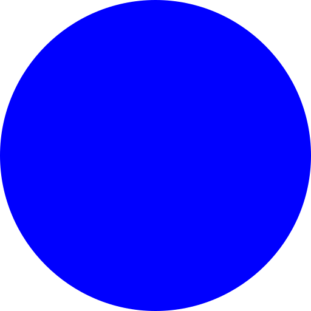
anqas - azul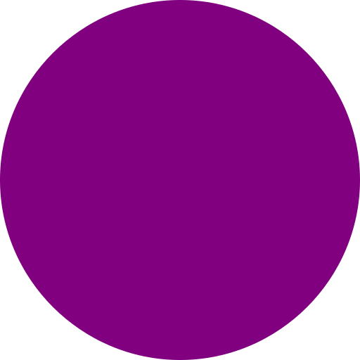
kulli - morado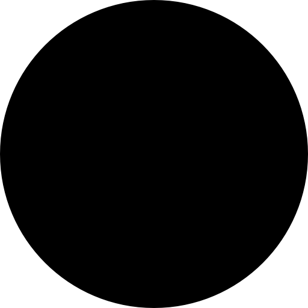
yana - negro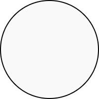
yulaq - blanco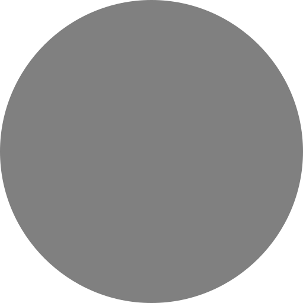
uqi - plomo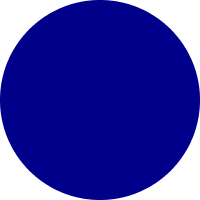
yana anqas - azul oscuro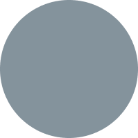
untay - gris humo
qamya tunquśh - crema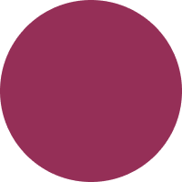
yana puka - guindo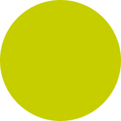
chillka - verde amarillo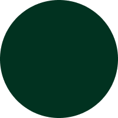
yana quyu - verde oscuro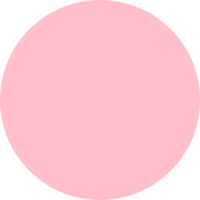
qamya puka - rosadomuklu - multicolor chikchi - chispeado paku - rubio allpa limpi - marrón alwaśh - amarillento illaynilaa - plateado uurunilaa - dorado ućhpaśh - color ceniza